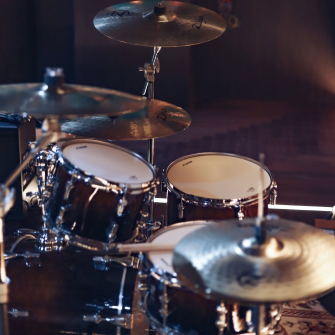

Sobre a loja Artsom
Fundada há 30 anos e localizada no coração da cidade, a Artsom traz para os cidadãos goianeses e da região o que há de melhor em produtos relacionados a música em geral, sendo assim destaque na cidade e conquistando novos clientes a cada dia.
Nossa missão é: "Proporcionar ao cliente o melhor em qualidade musical, seja em instrumentos ou em acessórios".
Oferecemos profissionais experientes e antenados às mudanças no mundo da música. O atendimento possui padrão de excelência e agilidade, garantindo a satisfação dos nossos clientes.
Localização do nosso estabelecimento
Nosso estabelecimento está localizado no coração da cidade.
Benefícios
- Atendimento ao Cliente
- Variedade de Produtos
- Localização
- Reparo de Instrumentos
- Preço Baixo
- Condições de Pagamento